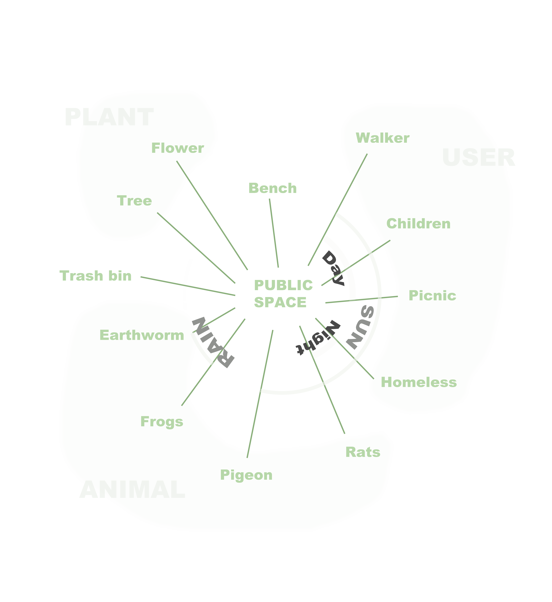

Systems
Rental housing system for
foreigners
in New York City
The rental housing system for foreigners in New York City involves several key stages and components, each contributing to the overall dynamics of the system. This system includes various elements such as the rental properties, landlords, real estate agents, online platforms, community networks, and the foreign tenants themselves. The function or purpose of this system is to facilitate the process by which foreigners can find and secure suitable housing in a new city.
